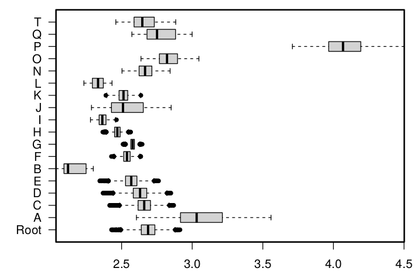

Micha and Momo's paper in Frontiers in Ecology & Evolution
2021-05-07
Our paper, lead by Michael Buchwitz and Maren Jansen, came out today in Frontiers in Ecology & Evolution, in the context of a special issue on the Origin and Early Evolution of Amniotes. This is a study I have been contributing to since 2018 (if I remember correctly), so I am glad to see it finally published. The idea of the paper was to use a fairly impressive database of measurements on early tetrapod trackways, and current hypotheses on track-trackmaker relationships, to test some of those hypotheses and characterize the mode of locomotion of the last common ancestors of amniotes. As it is quite outside of my usual expertise I am not here going to delve into the details of the study, given I was, after all, involved only as the number guy.
I don't have a lot of opportunities to work with phylogenies in my own line of work, though my training in Paris was very heavily phologenetically-oriented, so it was fun to finaly make use of it.
One particular thing I did for this paper was to try taking into account track polymorphism into the ancestral state reconstruction, given the data we used had, for some species, a large amount of specimens measured, and the distribution of the measurements showed quite a spread (ranging from juveniles to adult forms) and the occasional bimodal set-up. The idea I had to account for this was simply to bootstrap these data, meaning that instead of simply using the mean measurement, or median measurement, for each ichnospecies, I picked a single species randomly representing each species, and reiterated the operation a large amount of time. Here the code in R (full code for the entire study is available here):
#Bootstrap based on polymorphism
n_trials <- 1e4
n_char <- length(all_char) #all_char contains the list of characters for which we want to run the ASR
# This is fairly time consuming so to make things smoother I used doSNOW to parallelize it.
# The following 7 lines are only there to set it up.
library(doSNOW)
cl <- parallel::makeCluster(2)
registerDoSNOW(cl)
pb <- txtProgressBar(max = n_trials, style = 3)
progress <- function(n) setTxtProgressBar(pb, n)
opts <- list(progress = progress)
set.seed(20180822)
aas <- foreach(i = seq_len(n_trials), .options.snow = opts) %dopar% {
R <- list() # will contain the results of the 1e4 x n_char x n_tree ASR.
for(j in 1:n_char){
R[[j]]<-list()
# Pick a random specimen for each run and get the value for the specific measurement.
# First get the list of specimens for which that particular character was measured:
sp <- dat$specimens[!is.na(dat$specimens[,colnames(dat$specimens)==all_char[j]]),]
# Then select randomly a single specimen for each ichnospecies:
specimen_set <- sapply(split(sp$`No Specimen`,sp$`No Species`),function(x)ifelse(length(x)>1,sample(x,1),x))
# Then pick its corresponding measurement:
values <- sapply(specimen_set,function(x)sp[sp$`No Specimen`==x,colnames(sp)==all_char[j]])
# We tried several phylogenetic hypotheses here
for(k in 1:n_tree){
# Maximum likelihood ASR
R[[j]][[k]] <- ape::reconstruct(values,dat$trees[[k]],method="ML")
}
}
R
}
close(pb)
stopCluster(cl)
It gives a nice idea of the incertitude linked to the set of specimens measured that is introduced by ASR.
An example of the distribution of the ancestral values for a given character for each node, when picking which specimen represent the species at random over 10 000 runs.
Anyway, the paper is naturally about way more than just this (in fact it is a very minor point of that paper) but I thought it was a cool solution to that particular issue.